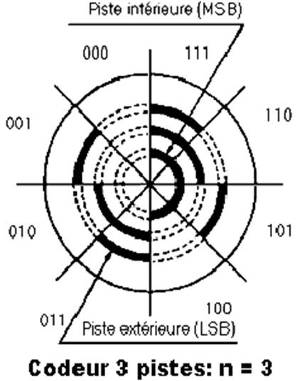

|
Les capteurs numériques |
Ce concept a été développé pour pallier les contraintes développées ci-dessous et générées par le codeur incrémental (appelé aussi relatif) :
□ En cas d'absence prolongée du réseau (en cas d'absence de sauvegarde côté unité de traitement) l'information de position peut être perdue.
□ En cas d'une modification de position (déplacement manuel hors tension du mobile contrôlé en position), il y a perte de la position du mobile.
□ En cas d'impossibilité de recalage par le "Top zéro" dans le cas de mouvement de type oscillant ne décrivant jamais un tour complet.
□ Le disque rotatif du codeur absolu comporte un nombre (n) de pistes.
□ Chaque piste a son propre système de lecture (diode émettrice et diode réceptrice).
□ A chaque position angulaire de l'axe codeur correspond un code binaire.

Ci-dessous une animation pour mieux comprendre le codeur incrémental relatif ou absolu :
Créé avec HelpNDoc Personal Edition: Écrire des livres électroniques ePub pour l'iPad